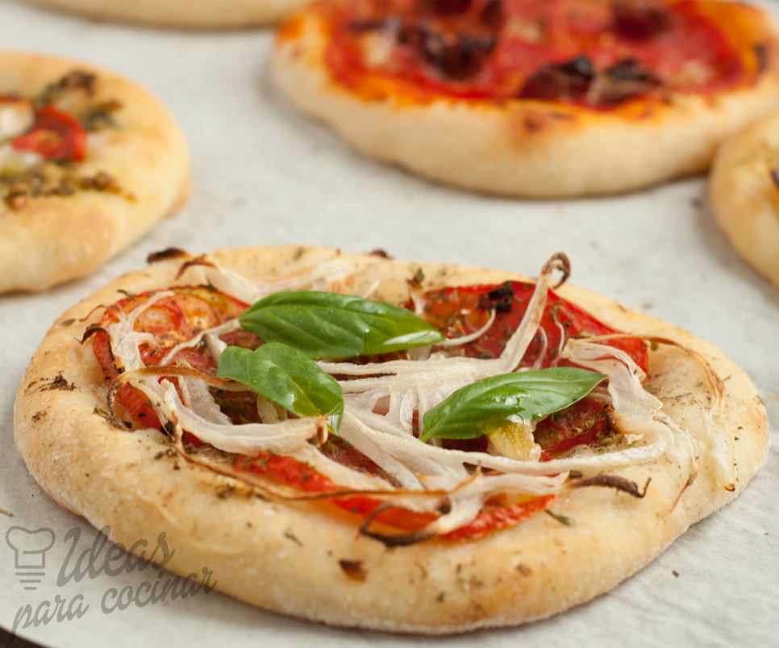

Ingredientes:
Para dos mini pizzas
-1 pan integral redondo o bagel integral cortado a la mitad
-Salsa de tomate
-Queso mozzarella rallado
-Vegetales para agregar: pimiento picado, tomate cortado en rodajas, etc
-Albahaca y orégano
Preparación:
Encender el horno para precalentarlo. Agregar salsa de tomate a cada mitad de pan o bagel, agregarles queso mozzarella y vegetales por encima. Condimentar con sal, albahaca y orégano.
Llevar al horno en una placa y cocinar de 5 a 8 minutos, hasta que el queso burbujee.
Dejar enfriar durante 1 minuto y sirve.